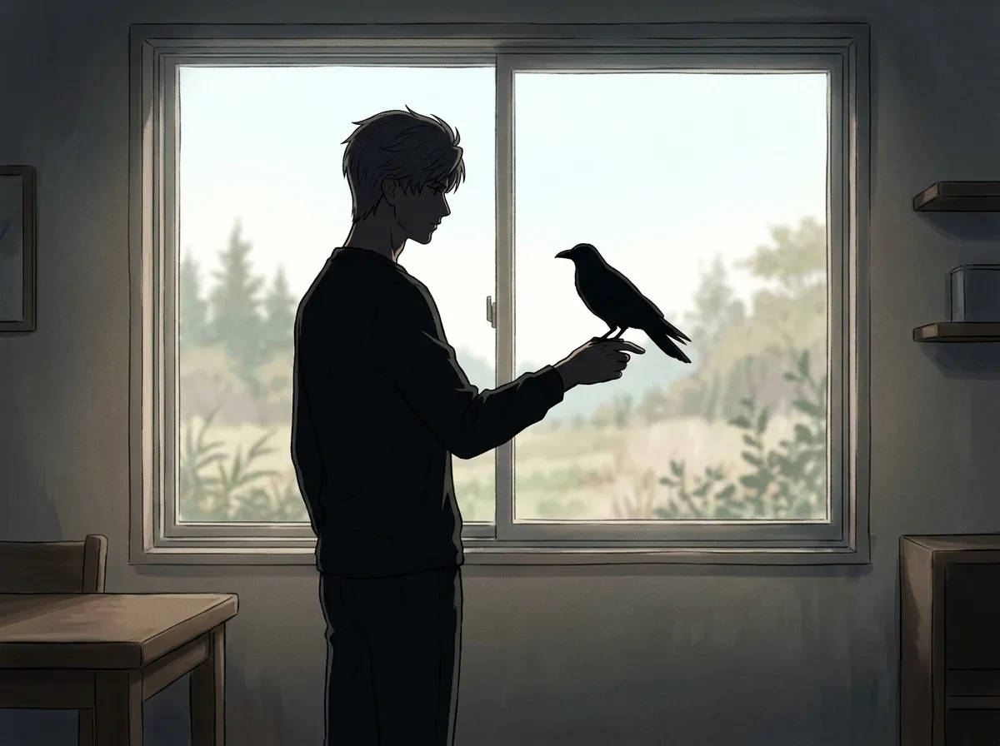
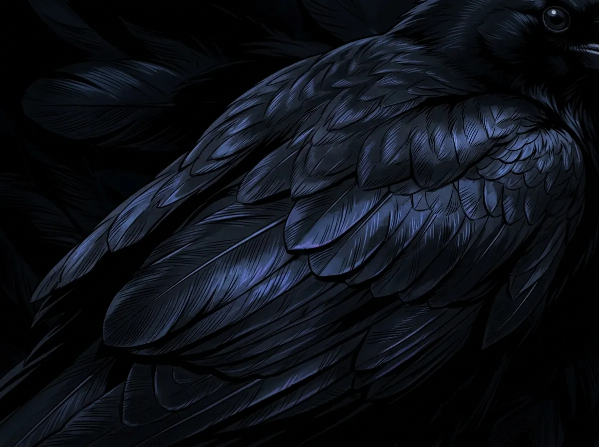
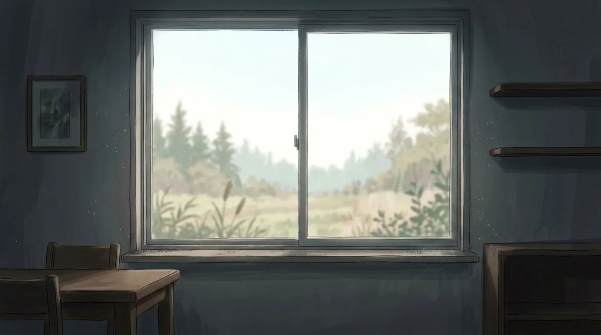
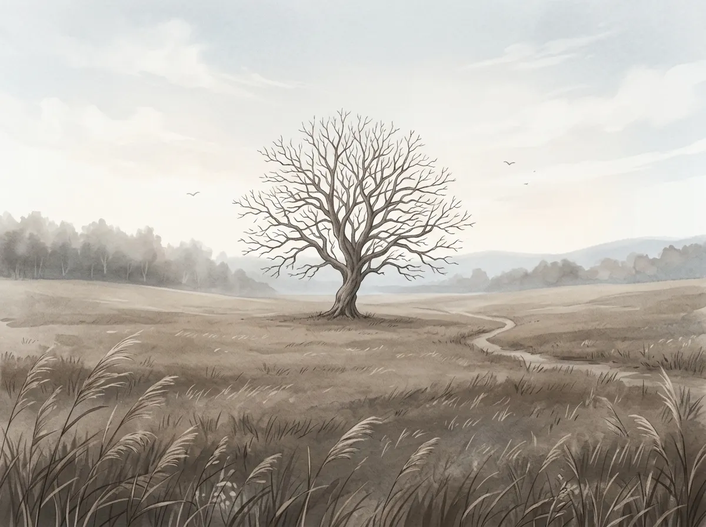
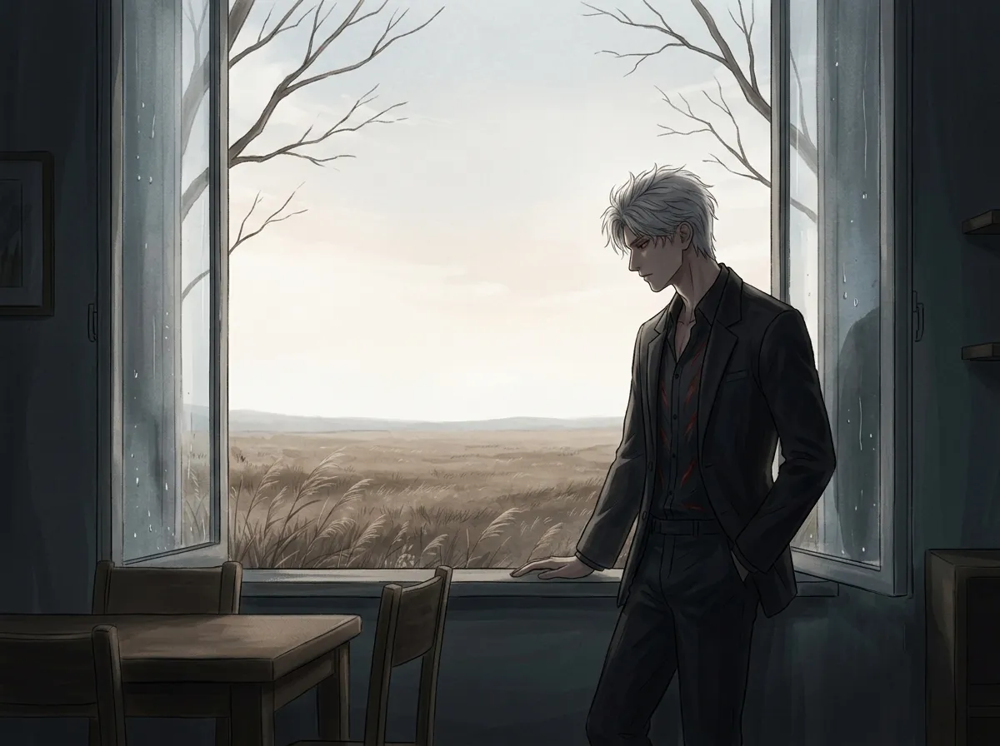

He had a bird once. Before Mephisto. Before everything.
He had a bird once.
Before Mephisto. Before the throne. Before N109. Before the person he became. There was a bird.
It was black. Not like Mephisto's black. Deeper. Darker. The kind of black that seemed to swallow the light around it. He doesn't remember where it came from. He doesn't remember how long he had it. He only remembers that it was there. And then it wasn't.
He never talks about it. He never tells anyone. Mephisto knows. Mephisto has always known. Mephisto came after.
This is the story of the bird that never came back. And the person who never tried to have anything again.

The bird arrived before he knew how to have anything.
He was young. He was alone. He didn't know how to keep things. He didn't know how to hold onto anything without breaking it.
The bird landed on his windowsill one day. It looked at him. He looked at it. Neither of them moved.
It came back the next day. And the day after. And the day after that.
He didn't know why. He didn't know why a bird would choose to stay. He didn't know why a bird would choose him.
He fed it. He gave it water. He didn't know how to care for something. He learned. He learned because the bird stayed. He learned because the bird trusted him.
He didn't choose the bird. The bird chose him. He didn't know that was possible.
He didn't choose the bird. He didn't go looking for it. He didn't know he was allowed to have things. He didn't know he was allowed to keep things.
The bird chose him. The bird landed on his windowsill and stayed. The bird trusted him. The bird taught him that he could keep something without breaking it.
He didn't know that was possible. He didn't know he could be the person who keeps things.

The bird was black. Not like anything he had ever seen. Not like the sky at night. Not like the shadows. Not like the absence of light.
It was deeper. Denser. The kind of black that seemed to absorb everything around it. The kind of black that was more than the absence of color. The kind of black that was a presence.
He didn't know why the bird was so black. He didn't know why the blackness mattered. He only knew that it did. He only knew that he had never seen anything like it before. He only knew that he would never see anything like it again.
He didn't know, then, that he would spend the rest of his life wearing black. Trying to find a shade that came close. Trying to remember the black of the bird that stayed.
He wears black now. Every day. He has worn black for years. He has tried every shade. He has tried every fabric. He has tried every version of black there is.
None of them are the black of the bird. None of them are that deep. None of them are that alive. None of them are that present.
He doesn't know if he wears black because he likes it. He doesn't know if he wears black because it reminds him. He only knows that he can't stop trying to find the black he lost.

It left one day. He doesn't remember why. He doesn't remember if there was a sign. He only remembers that it didn't come back.
He waited. He waited at the window. He waited for hours. He waited for days. He waited for weeks.
It didn't come back.
He didn't know what to do. He didn't know how to be without the bird. He didn't know how to be the person who had had something and lost it.
He didn't know how to have something. He learned. He learned because the bird stayed. He learned because the bird trusted him.
He never learned how to lose something. He never learned how to let go. He never learned how to stop waiting for the bird to come back.
He had never lost anything before. He had never had anything to lose. The bird was the first thing he had. The bird was the first thing he kept. The bird was the first thing he lost.
He didn't know how to lose. He didn't know how to let go. He didn't know how to stop waiting for something to come back.
He is still waiting. He has been waiting for years. He doesn't know if he's waiting for the bird. He doesn't know if he's waiting for something else. He only knows that he never stopped waiting.

He found a tree. A small tree. A tree in a place no one would go. A tree where no one would find it.
He buried the bird there. He doesn't remember if he said anything. He doesn't remember if he stayed. He only remembers that he never went back.
He never went back to the tree. He never went back to the place where he buried the bird. He never went back to the place where he said goodbye.
He doesn't know why he never went back. He doesn't know if he was afraid. He doesn't know if he was sad. He only knows that he couldn't. He only knows that the tree is still there. And he is still here. And the bird is still under the tree. And he is still waiting.
He never went back to the tree. He doesn't know why. He doesn't know if he was afraid. He doesn't know if he was sad. He only knows that he couldn't.
He has been back to every place he has ever been. He has returned to every place that mattered. He has never returned to that tree.
Because the tree is the place where he said goodbye. And he doesn't know how to say goodbye. He has never learned. He has never wanted to.

Mephisto came later. Mephisto arrived on his own. Mephisto chose him.
He didn't choose Mephisto. He didn't want to choose. He didn't want to have anything again. He didn't want to lose anything again.
Mephisto chose him anyway. Mephisto stayed. Mephisto refused to leave. Mephisto refused to be the bird that never came back.
He didn't know what to do with that. He didn't know what to do with something that stayed. He didn't know what to do with something that chose him.
He still looks at the sky. He still looks at the window. He still hopes. He never stopped hoping. He never stopped waiting. He never stopped being the person who waits for the bird to come back.
He never told anyone about the bird. He never told anyone about the tree. He never told anyone about the black. He never told anyone about the waiting.
He never told anyone. Except Mephisto. Mephisto knows. Mephisto has always known.
He never stopped waiting. He never stopped hoping. He never stopped being the person who waits for the bird to come back.
He doesn't know if the bird will come back. He doesn't know if there is a bird to come back. He only knows that he is still waiting. He only knows that he will always be waiting.
Because the bird was the first thing he ever had. And he never learned how to let go. He never learned how to stop waiting. He never learned how to stop being the person who had something and lost it.
He will always be that person. He will always be waiting. He will always be looking at the sky. He will always be looking at the window.
He will always be waiting for the bird to come back.
Sylus had a bird once. Before Mephisto. Before the throne. Before everything.
It was black. It stayed. It left. It never came back.
He never stopped waiting. He never stopped hoping. He never stopped being the person who waits for the bird to come back.
He wears black now. Every day. He never found the right shade. He never will.
He never went back to the tree. He never could. He never learned how to let go. He never learned how to stop waiting.
Mephisto came later. Mephisto chose him. Mephisto stayed. Mephisto is still here.
But the bird is still gone. And he is still waiting. And he will always be waiting. For the bird that never came back.